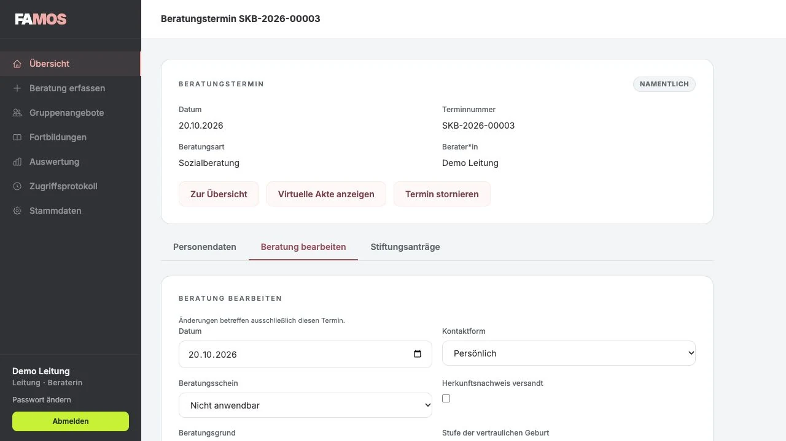
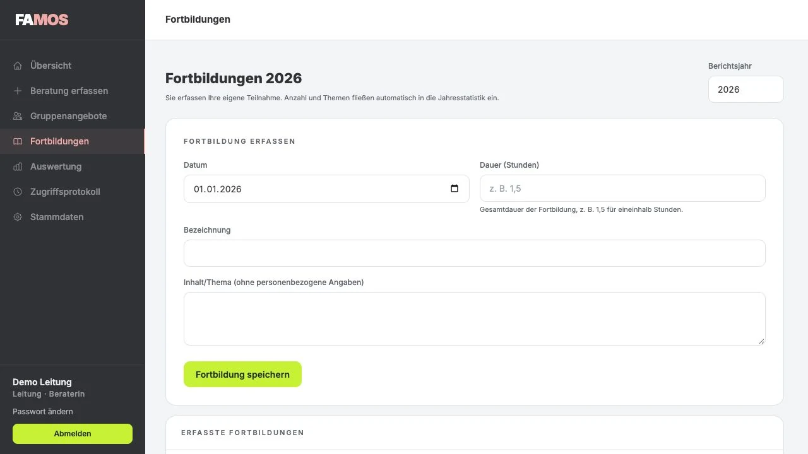
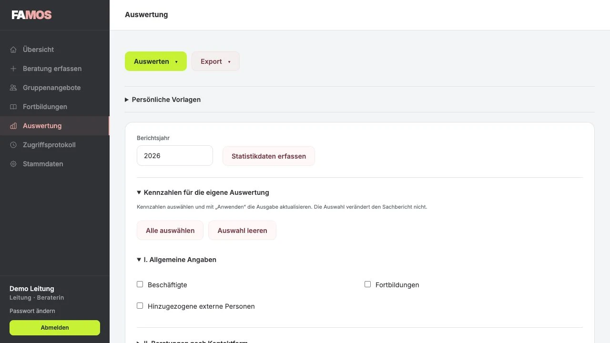

EFB: Die Fallakte im Mittelpunkt.
Anmeldung, Familie, Beratungsverlauf und Abschluss gehören zusammen. FAMOS-EFB unterstützt die Fallführung und die Berichte Ihrer Einrichtung.
EFB im Alltag ansehenFür die Arbeit in Ihrer Beratungsstelle
Fallakte, Beratungstermine und Auswertung: FAMOS bringt zusammen, was Ihr Team im Alltag braucht. Mit zwei eigenständigen Anwendungen für EFB und SKB.
Einblick in den Entwicklungsstand Oktober 2026. Alle Produktabbildungen zeigen synthetische Beispieldaten. Version und Funktionsumfang für Ihren Test stimmen wir gemeinsam ab.
Ein Fundament, zwei AnwendungenAnmeldung, Familie, Beratungsverlauf und Abschluss gehören zusammen. FAMOS-EFB unterstützt die Fallführung und die Berichte Ihrer Einrichtung.
EFB im Alltag ansehenJeder Beratungstermin ist ein eigener Vorgang. Folgetermine werden bewusst verknüpft; die virtuelle Akte zeigt den Zusammenhang im berechtigten Zugriff.
SKB im Alltag ansehenBeide Anwendungen lassen sich einzeln beauftragen. Sie teilen Bedienkonzept und technische Grundlage; Datenbestände und Berechtigungen bleiben getrennt.
FAMOS-EFB führt Anmeldung, Fallakte und Auswertung zusammen. Teamassistenz, Beratung und Leitung arbeiten mit den Ansichten und Rechten, die zu ihrer Aufgabe passen.

Die Anmeldung erfasst die Angaben zum Kind und seinen Bezugspersonen. Fehlende Informationen lassen sich im Verlauf ergänzen; Zuständigkeit und Fallstatus bleiben nachvollziehbar.

Stammdaten, Elternkontakte, Beratungstermine und Dokumente gehören zu einer gemeinsamen Fallakte. Die statistischen Angaben entstehen im laufenden Arbeitsablauf.

Bundesstatistik, kommunaler Sachbericht und eigene Fragestellungen haben jeweils ihren Platz. Zeitraum, Fallauswahl und Kennzahlen lassen sich passend zur Aufgabe bestimmen.

Die IDEV-Datei wird in IDEV importiert. Eine direkte Übermittlung aus FAMOS an das Statistikamt ist eine geplante Erweiterung.
Anfragen, Veranstaltungen und Vernetzungstätigkeiten werden getrennt von den Beratungsfällen erfasst. So bleiben fachliche Leistungen und Arbeitsaufwand sichtbar.

FAMOS-SKB arbeitet vom einzelnen Beratungstermin aus. Jeder Termin erhält eine eigene Nummer und eine zuständige Person. Zusammengehörige Termine werden über eine virtuelle Akte sichtbar.

Beratungsart und Kontaktform bestimmen die Erfassung. Die Konfliktberatung bleibt anonym. In der namentlichen Sozialberatung lassen sich Name und eine optionale Telefonnummer erfassen.


Ein Folgetermin wird ausdrücklich einem früheren Termin zugeordnet. Bei namentlicher Erfassung helfen letzter Beratungstermin und weitere Vergleichsangaben, die richtige Person auszuwählen.

Gruppenangebote, Kursreihen und Fortbildungen ergänzen die Einzelberatung. Eigene Erfassungsbereiche halten diese Tätigkeiten für den Jahresbericht zusammen.


Die Auswertung führt Beratungen, Stiftungsanträge, Gruppenangebote und Jahresangaben zusammen. Termin- und Personenzahlen werden dabei getrennt gezählt.


FAMOS verbindet geschützte Daten mit nachvollziehbaren Zuständigkeiten. Die organisatorischen und technischen Bedingungen Ihrer Einrichtung klären wir vor dem Einsatz.
Wir zeigen FAMOS an den Abläufen Ihrer Beratungsstelle. Anschließend stimmen wir ab, wie ein kostenfreier Testbetrieb und eine Einführung für Sie aussehen können.
Sie sehen die passende Anwendung und besprechen mit uns die Aufgaben von Assistenz, Beratung und Leitung.
Wir legen Version, Funktionsumfang, Start und Laufzeit gemeinsam fest. Für die Erprobung steht Ihre eigene Installation im Mittelpunkt.
Vor echten Beratungsdaten klären wir Datenschutzvereinbarungen, Rollen und technische Voraussetzungen. Datenübernahme und Einführung planen wir passend zu Ihrer Einrichtung.
EFB, SKB oder beide Anwendungen: Wir vereinbaren Software, Einführung und Betrieb in einem nachvollziehbaren Angebot.
Lizenz, Einrichtung, Leistungsumfang und Konditionen erhalten Sie schriftlich im Angebot. Anwendung und Standorte sind Teil der Abstimmung.
Zeigen wir Ihnen, wie FAMOS dazu passt. In einer persönlichen Produktvorstellung ist Raum für Ihre Abläufe, Ihre Berichte und die Fragen Ihres Teams.
Oder schreiben Sie uns direkt: hello@volta.codes